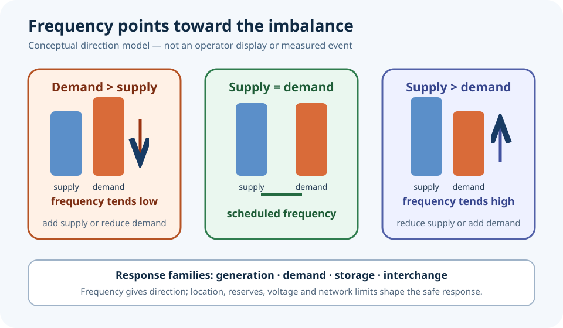

01 · Visual model
Read the direction, not a diagnosis

Text equivalent: When demand is greater than available supply, frequency tends below its scheduled value. When supply is greater, frequency tends above it. When the two balance, frequency is at the scheduled value. Small variations occur continuously, so the system uses overlapping responses to correct them.
02 · Foundations
Three ideas to keep separate
Power is a rate
Generation and demand are compared in watts, often megawatts. Energy is power accumulated over time; a battery stores energy but charges or discharges at a power rate.
Frequency is shared
Within an AC interconnection, frequency reflects the combined balance. In the continental United States, the scheduled value is normally 60 hertz.
Balance has layers
Physical response and equipment controls act quickly. Automatic generation control and operator actions continue the correction over longer intervals.
03 · Worked example
A 50 MW shortfall gives direction, not magnitude
Suppose an invented area has 1,000 MW of demand and 950 MW from generation plus net imports. Demand exceeds supply by 50 MW, so frequency tends downward. The arithmetic does not predict an exact hertz value: inertia, controls, the size of the interconnection and the disturbance’s location all affect the motion.
04 · Response ladder
Different tools cover different moments
| Layer | Job | Examples |
|---|---|---|
| Immediate | Arrest the change | Frequency-sensitive equipment and fast controls |
| Automatic | Restore scheduled balance | Generator controls, storage controls, automatic generation control |
| Operator | Sustain and reposition | Dispatch, interchange, demand response, reserves |
Boundary: The layers overlap. Not every resource can act in every place or time, and inverter-based resources may provide frequency support through controls rather than rotating inertia.
05 · Practice
Run the 20-minute observation card
Open the grid-balance observation card. Calculate an invented area’s total supply, predict frequency direction, select two response families, and name one constraint that could change the choice.
Knowledge check
- If frequency tends low, which side of the balance is larger?
- Why can storage appear on either side?
- What important fact can frequency alone not reveal?
Reveal answer guidance
Demand is larger than available supply. Storage can discharge as supply or charge as demand. Frequency does not identify the cause, location, safe resource, voltage condition or transmission constraint.
06 · Next steps
Compare the model with operating explanations
Read the EIA electric-system introduction for the high/low-frequency mapping and a disturbance example. Then use DOE’s balancing-authority backgrounder to see how generation, storage, transfers and demand-side measures fit together. The source ledger records claim boundaries.